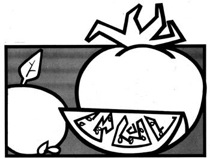

I've saved flower and vegetable seed from my garden for many years and every summer, as the tomatoes redden on the vines and the bean pods plump out, I look forward to the satisfying ritual that hands the qualities of my best plants on from year to year.
I find this seed-keeping project rewarding for several reasons. First, of course, it's a big help in the money department. Now that commercial seeds are priced at 354 to 754 per packet, my budget is healthier because I can sow at least part of my plot without a trip to the garden supply store. Second, the garden is healthier too since each successive crop is descended from plants that flourished right here on my place, and the offspring of those vigorous specimens are especially well suited to my particular growing conditions. Third, it's also,good to know that part of my seed-which assures me of food for the future can double as extra rations during the winter months. (Potatoes are always potatoes, whether you put them in the ground or in the cooking pot.) And to tell the truth, even if my hobby didn't offer the above practical benefits, I'd go ahead with it anyway just for, fourth, the fun of it all.
My seed gathering project, of course, began with an original supply of plants which I grew from store-bought seed "way back when". If you decide to follow this example, purchase your stock from a reliable firm and take care to pick the most suitable varieties (standards, not hybrids) for your purpose and locality. When the vegetables are well grown, select the best specimens of each and let them mature instead of using them for food. (Mark the chosen individuals in some way by tying strings to them, for instance so that they won't be harvested by mistake.)
How long the seed will take to form varies from one crop to another and depends especially on whether the plants need one season or two for full development. The ,former group the annuals-includes such garden favorites as beans, peas, radishes, mustard, lettuce, spinach, corn, cantaloupes, pumpkins, squash, cucumbers, eggplant, peppers, and tomatoes. The seed of all these annuals is easily collected.
Any radishes you leave in the ground, for instance, will send up tall stalks with flowering tops that attract honeybees. Later on, seed pods will form, ripen, and dry.
Harvest the pods by breaking them off the stalks, and then shake them as a test for dryness. Any that don't rattle should be hung (out of the hot sun) for further drying. Those that have reached the rattling stage can be opened and their contents placed in a saucer to dispel any remaining moisture. The seeds can then be packed in an envelope. Seal the container, mark it with the name of the vegetable and the date, and file it in a dry place until the following season.
Lettuce and spinach, if not picked at the leaf stage, will "bolt" that is, send up stalks from which the fully matured tops can later be cut. You probably won't need to leave a whole row of either plant for seed production, but it's better to have too much than too little.
Beans and peas to be saved for seed (or soup) are allowed to remain on the vine until thoroughly dry. The plants can then be pulled and the dry pods picked.
One easy method of shelling legumes is to put the pods in a tightly woven cloth bag, lay the sack on the floor, and walk on it to break open the seed containers (or just dump the harvest into a tub and tramp on it). Then pour the mixture of beans and pods from one large pan to another in a moderate wind to blow away the debris. The cleaned seed can be stored in bags in a dry place.
Another popular group of annuals-the vine crops-are easily cross pollinated by insects and must not be planted near one another if you want predictable results in the next generation. This need for separation is the only problem you're likely to find with cucumbers, cantaloupes, pumpkins, and squash since the seeds themselves are large and easily collected from the ripe fruit. (Make sure cucumbers really are ripe. They'll let you know by turning a golden color.) When such a fruit or vegetable is ready, simply cut it in half and scrape the contents of the cavity into a wooden or porcelain container (never use tin or iron). Add some water and let the mixture ferment a day or two to separate the seeds from the mucilaginous material. Then pour in more liquid and stir the mess. The good seed will sink to the bottom, while the pulp and immature seed float on top. Pour off the waste and wash the solids with fresh water until only the desired product remains to be dried and stored in bags in a moisture-free place.
Other fleshy crops can be treated in the same way. just be sure such vegetables are thoroughly ripe before picking. Peppers, for instance, ought to be red and rather soft, while eggplant should be left on the bush as long as possible until its seeds are brown-and gathered just before frost.
Tomatoes come in many varieties red, pink, and yellow, large and small. If you raise hybrids, don't attempt to save their seed (which is infertile). Stick to the standards for that purpose, and remember to leave your chosen specimens on the vine until they're overripe for table use. just one or two tomatoes might furnish enough offspring to stock a small garden, and can be handled in the same manner as squash and cucumbers. If you want larger amounts of seed, cut a number of fruit in half and squeeze the insides into a wooden or earthenware receptacle. Or, for real mass production, just toss the whole tomatoes into a barrel and crush them with the square end of a wooden post (gently, so as not to injure the seed). Then add water and proceed with the fermentation process described above.
Corn (sweet, field, and pop) must also be chosen from standard varieties, not hybrids, if seed is to be saved. The ears should be left on the stalk until they're rather dry, and then picked and stored in an airy place to dehydrate still more.
Potato plants grow from the eyes of tubers formed the previous year and kept in cool storage over the winter. Since one potato may have more potential sprouts than are needed for a single hill, it can be cut into two, three, or more pieces as long as there are several good eyes on each chunk. The segments are allowed to stand a couple of days until the fresh surfaces darken and partially dry. This process of "healing over" is necessary because a newly cut potato tends to rot in the ground instead of growing.
Some folks just skip the business of cutting seed potatoes, plant the whole tuber regardless of how many eyes it has, and still get a good yield. Like many gardening practices, this seems to be a matter of preference.
All the crops I've discussed so far are annuals and seed collection procedures are quite different for biennials, which don't mature until their second year. This group includes cabbage, carrots, beets, parsnips, rutabagas, turnips, and parsley.
To obtain carrot seed, for example, select good-sized roots within the fall and break or twist off the tops (leaving about half an inch of stem so that the crown of the vegetable won't be injured). Store the carrots in the earth, covered deeply enough to prevent freezing. In the spring, set the roots in rows-just as they grew originally, with the crown of each one level with the surface of the ground-and leave them until seed stalks form and the seeds ripen.
Carrot seeds are produced in brown clusters at the end of the stalk's branches, and ripen unevenly. As each bunch darkens and dries, it can be cut with scissors and laid on a sheet to dehydrate further. The seed can then be rubbed out of the clusters by hand and the rough material and chaff removed by raking. Final cleaning can be done by winnowing (dropping the vegetation from a height of five or six feet in the open-over a piece of canvas or sheeting when a light wind is blowing). The heavy seed will fall on the ground cover while the breeze carries away the light chaff. Next year's sowing is then stored in paper or cloth bags, in a room of uniform temperature.
The principle is the same for other biennials: First season roots or plants are kept in cool storage over the winter, replanted the following spring, and allowed to mature and bear seed.
One blessing of home-grown seed is that you can save all you want far more than you could afford to buy. In the case of some crops, there's no such thing as "too much" because any surplus you may have is useful as food. Extra corn can be ground in a mill for use in many delicious cornmeal dishes, and you can't beat snowy mounds of popcorn for winter evening nibbling. Dried navy beans are another good cold-weather dish (and are worth raising just for that purpose if you have garden space). Pumpkins, squash, and sunflower seeds can be salted and roasted for a nutritious snack: And everyone has a favorite use for the overflow from the seed potato bin.
You can also save flower seeds, as an economy and for the interest of studying the varied forms of propagation. Old fashioned poppies, for instance, bear seed vessels that look like tiny cups with little holes around their upper rims. The containers are designed to tip out the seed when the wind blows the stalk but you can do the tipping yourself, and catch the contents in an envelope.
Petunias produce tiny seeds in small pods which can be picked, dried, and opened. The hard, black "pebbles" that will someday be morning glories are also borne in pods. In zinnias, however, the seed is formed at the base of the petals and the whole flower head is gathered and dried. Even geraniums grown outdoors in summer will yield the makings of future plants.
Whatever seeds you save should be dated, and used (preferably) the following ,year. The power to germinate decreases rapidly with age, and-while keeping times differ in various crop solder seeds generally don't perform as well as fresh.
It's important to remember that no seed-whatever its origin-will germinate 100 percent. Fifty percent is a more realistic expectation. Even the packets you order from leading suppliers will contain a number of duds, and you should allow for such failures by planting each row of your garden rather thickly. If you must thin later, the extras can be discarded or transplanted to a fresh space.
The fact is that seeds-like other living things-won't always behave just as you expect. Nevertheless, a program like mine is well worth the trouble and can eventually give you a good supply of reliable strains that thrive in your garden's special conditions. I hope you'll enjoy this fascinating activity as much as I have and continue to do!.
|
 |
|
|